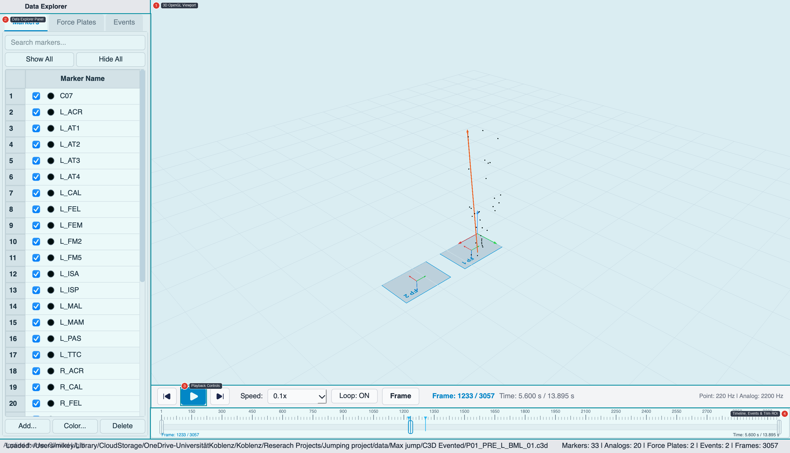
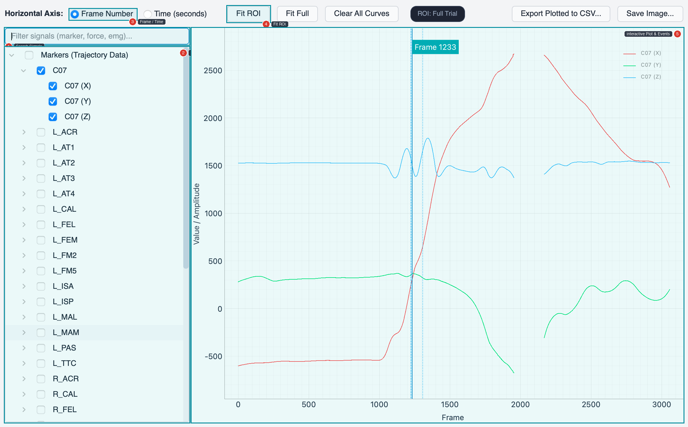
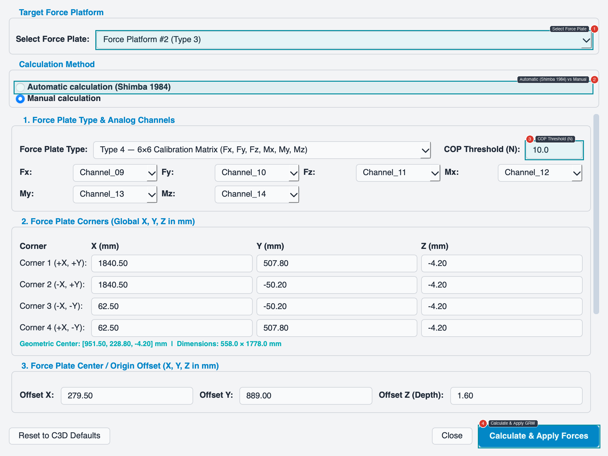
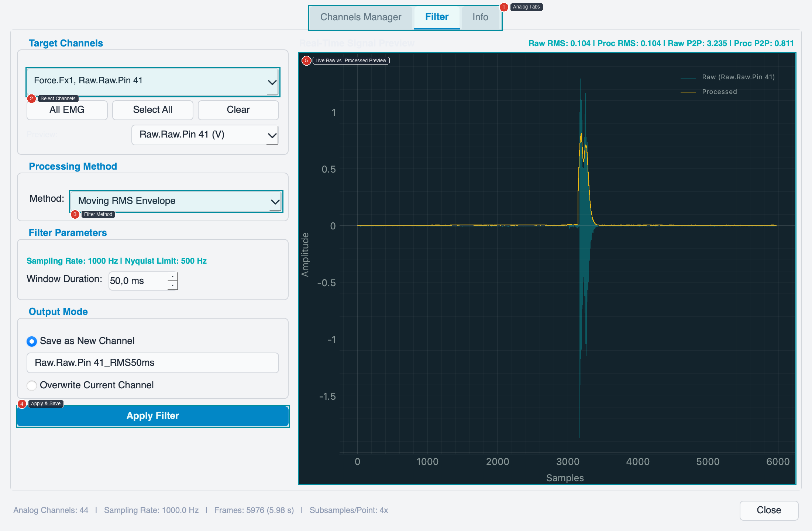
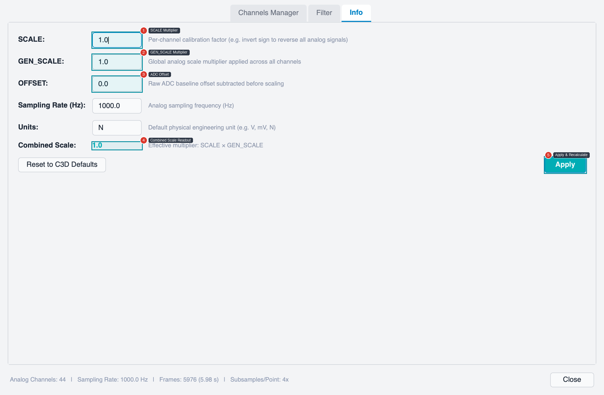
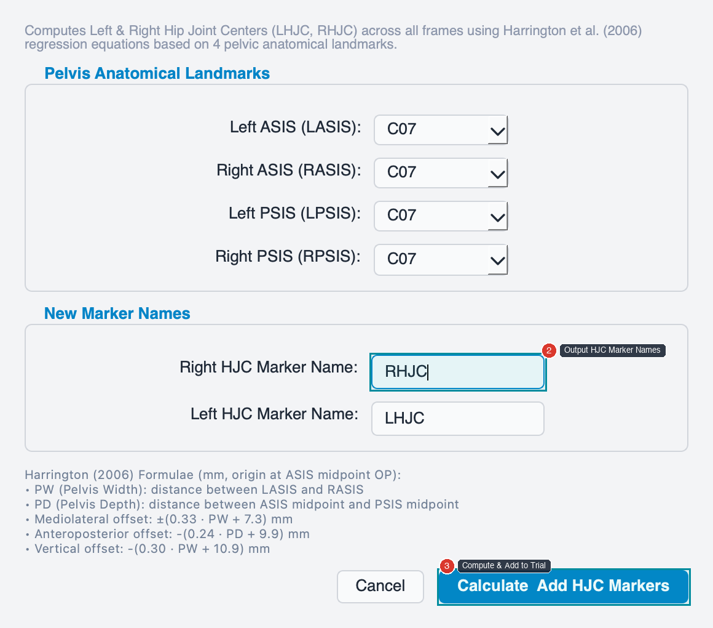
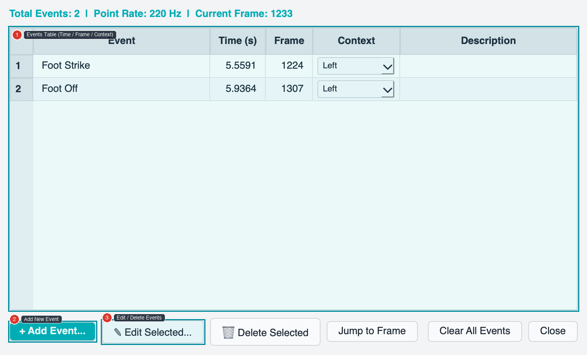
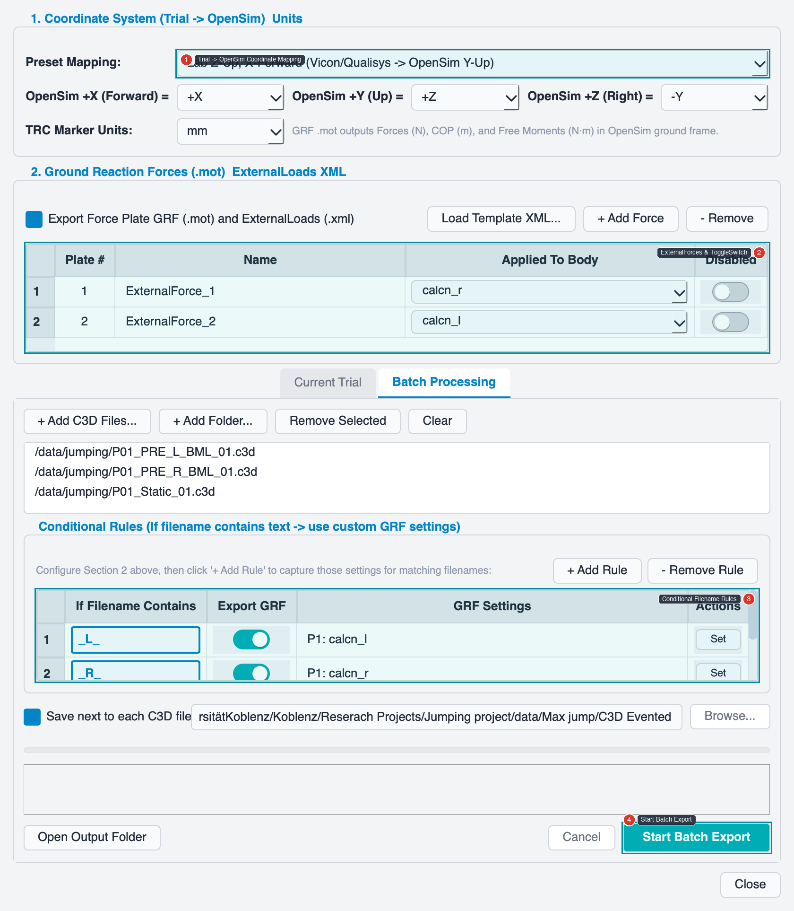
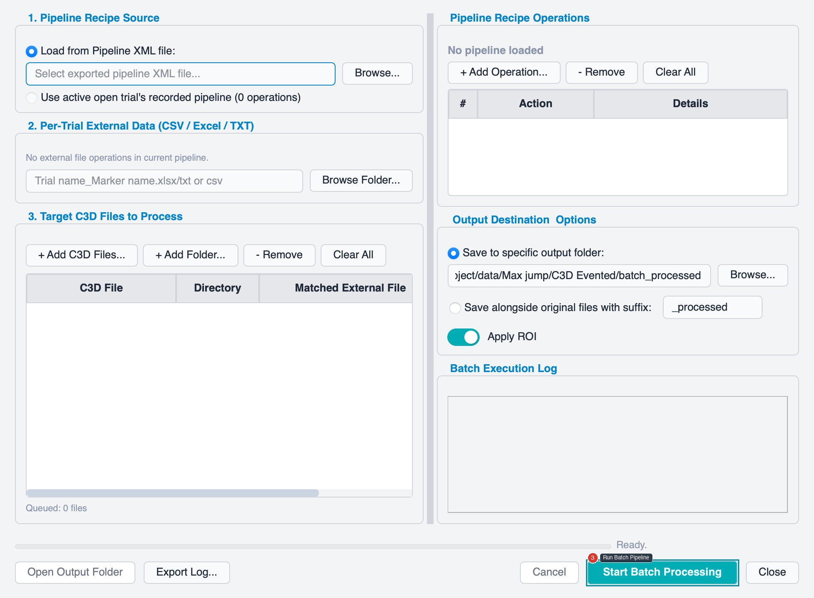
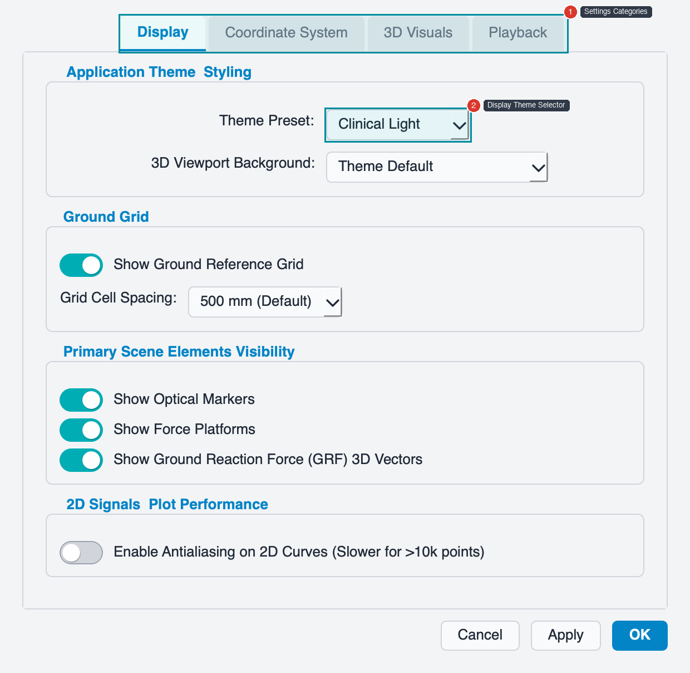

C3D Explorer — User Manual
Complete visual reference for biomechanics 3D inspection, force plate GRW, EMG/analog filtering, OpenSim export, and batch automation.
1. Main Workspace & 3D Viewport
Open any C3D file via File → Open... or drag-and-drop it into the window to inspect 3D markers, force platforms, live GRF vectors, and synchronized events.

P01_PRE_L_BML_01.c3d).| # | Component | Description |
|---|---|---|
| 1 | 3D OpenGL Viewport | Renders 3D markers, force plates (FP 1, FP 2), and Ground Reaction Force (GRF) vectors. Left-drag to orbit, scroll/right-drag to zoom, middle-drag to pan, and click markers to select. |
| 2 | Data Explorer Panel | Switch between Markers (search, visibility checkboxes, batch color, delete), Force Plates (live Fx/Fy/Fz & COP values), and Events (click to jump, edit, delete). |
| 3 | Playback Controls | Play/pause (Space), step frames (←/→), set speed (0.1x–2.0x), toggle Loop, and switch between Frame and Time (s). |
| 4 | Timeline, Events & Trim ROI | Scrub frames, inspect color-coded gait events (Red = Right, Blue = Left, Amber = General), and drag Trim Start [ / Trim End ] handles to constrain playback and exports to the active Region of Interest. |
2. Universal Signal & Marker Plotter
Open via Tools → Plotter... (Ctrl+P / Cmd+P) or View → Panels → Plotter to inspect synchronized marker trajectories, force plate channels, and analog/EMG waveforms.

| # | Control | Description |
|---|---|---|
| 1 | Search Signals | Filter the signal tree in real time by marker, force platform, or analog channel name. |
| 2 | Signal Tree | Check individual components or check a parent marker to plot X, Y, and Z together. |
| 3 | Frame / Time Toggle | Switch the horizontal axis between Frame Number and Time (seconds). |
| 4 | Fit ROI / Fit Full | Auto-fit axes to the trimmed ROI or full trial. Analog channels automatically scale proportionally to their amplitude. |
| 5 | Interactive Plot & Events | Shows synchronized playback cursor, event dashed lines, hover readouts, and direct axis-drag/scroll zooming. |
3. Force Plate Ground Reaction Wrench (GRW)
Open via Tools → Force Plate... to inspect or recalculate Ground Reaction Forces, moments, and Center of Pressure (COP).

| # | Control | Description |
|---|---|---|
| 1 | Select Force Plate | Choose which force platform in the trial to configure. |
| 2 | Calculation Method | Choose Automatic calculation (Shimba 1984) or Manual calculation (edit plate type 1–4, channel mapping, corners, origin offset, and 6×6 calibration matrix). Manual settings persist across sessions. |
| 3 | COP Threshold (N) | Minimum vertical force (|Fz|) required for COP calculation. Values below this threshold suppress COP noise during unloaded/flight phases. |
| 4 | Calculate & Apply Forces | Recomputes GRF, moments, and COP for the platform and updates the 3D scene and plotter. |
4. Analog Channels & EMG Signal Processing
Open via Tools → Analog... to rename, delete, import (CSV/TXT/XLSX), or apply zero-phase digital filters and EMG envelopes.

emg.c3d).| # | Control | Description |
|---|---|---|
| 1 | Analog Tabs | Switch between Channels Manager, Filter, and Info. |
| 2 | Select Channels | Multi-select dropdown plus one-click All EMG, Select All, and Clear buttons. |
| 3 | Filter Method | Choose Butterworth Low-pass / High-pass / Band-pass / Notch, Full-Wave Rectification, Moving RMS Envelope, or EMG custom (20–400 Hz BP + Rectify + 20 Hz LP). |
| 4 | Apply Filter | Save the result as a new channel or overwrite the original channel with full Undo/Redo support. |
| 5 | Live Signal Preview | Overlays the Raw signal and Processed output alongside live RMS and Peak-to-Peak (P2P) metrics. |
5. Analog Specifications (Info Tab)
Use the Info tab inside Tools → Analog... to inspect and adjust global C3D analog parameters.

| # | Parameter | Description |
|---|---|---|
| 1 | SCALE | Per-channel calibration multiplier read from the C3D file. Inverting its sign (e.g., -1.0 to 1.0) flips polarity across all analog channels. |
| 2 | GEN_SCALE | Global analog scale multiplier applied to all channels. |
| 3 | OFFSET | Baseline ADC zero offset. |
| 4 | Combined Scale | Live product SCALE × GEN_SCALE. |
| 5 | Apply | Updates metadata, rescales analog channels, and recalculates connected force platforms (with Reset to C3D Defaults and Undo/Redo support). |
6. Marker Analysis & Kinematics Tools
Available under Tools → Marker or by right-clicking selected markers in the 3D Viewport / Data Explorer:
- Create Average Marker (2 markers) & Create Centroid Marker (3+ markers)
- Hip Joint Center (Harrington 2006) (4 pelvis markers:
LASIS,RASIS,LPSIS,RPSIS) - Measure Distance (2 markers) & Measure Angle (3 markers) with ROI statistics and 2D plotting
- Filter Markers (zero-phase 4th-order Butterworth low-pass) & Batch Color / Rename

| # | Control | Description |
|---|---|---|
| 1 | Pelvis Landmarks | Automatically matches LASIS, RASIS, LPSIS, and RPSIS (editable via dropdowns). |
| 2 | Output Marker Names | Customize names for the computed Left and Right Hip Joint Centers (LHJC, RHJC). |
| 3 | Calculate & Add | Computes both 3D trajectories across all frames and adds them to the trial. |
7. Event Management & Timeline ROI
Open via Tools → Events..., press Ctrl+E / Cmd+E to insert an event at the current frame, or right-click the timeline.

| # | Control | Description |
|---|---|---|
| 1 | Events Table | Displays Event name, Time (s), Frame, Context (Right, Left, General), and Description. |
| 2 | Add Event... | Insert a new event at the active frame or a custom timestamp. |
| 3 | Edit / Delete Events | Modify or remove existing events; all edits are saved into exported C3D files. |
8. Export for OpenSim (.trc, .mot, .xml)
Open via File → Export → Export for OpenSim (.trc, .mot, .xml)... to export marker trajectories (.trc), ground reaction forces (_grf.mot), and ExternalLoads XML configurations (_grf.xml) for single trials or batch folders.

| # | Control | Description |
|---|---|---|
| 1 | Coordinate Mapping | Transform lab coordinates (e.g., Lab Z-Up, X-Forward) to OpenSim Y-Up (+X forward, +Y up, +Z right), or specify custom axes. Applies to markers, forces, COP, and free moments. |
| 2 | ExternalForces Table | Assign Applied To Body (e.g., calcn_r, calcn_l), toggle Disabled with the pill switch, or load an existing template XML via Load Template XML.... |
| 3 | Conditional Filename Rules | In Batch Processing, match filename substrings (e.g., _L_, _R_, static) to automatically apply custom GRF / ExternalLoads settings per file. Click Set to save Section 2's configuration into a rule. |
| 4 | Start Batch Export | Exports .trc, _grf.mot, and _grf.xml for every queued C3D file in the background. |
9. Batch Processing Pipelines
Open via File → Batch Processing... or Tools → Batch Processing... (Ctrl+Shift+B / Cmd+Shift+B) to run saved XML recipes or current operations across large collections of C3D files.

| # | Control | Description |
|---|---|---|
| 1 | Pipeline Operations | Load an XML pipeline recipe or add operations (marker filtering, EMG custom filtering, virtual markers). |
| 2 | C3D File Queue | Drag and drop C3D files/folders, automatically match external CSV/TXT/XLSX files, and track status badges. |
| 3 | Start Batch Processing | Executes all operations asynchronously with a live progress bar and exportable processing log. |
10. Visual Settings & Themes
Open via Settings... (Ctrl+, / Cmd+,) to customize themes, coordinate orientation, 3D marker/GRF styling, and playback defaults.

| # | Control | Description |
|---|---|---|
| 1 | Settings Categories | Switch between Display, Coordinate System (Z-Up / Y-Up), 3D Visuals, and Playback. |
| 2 | Display Theme Selector | Choose from 6 themes: Biomech Dark, Clinical Light, Nordic Frost, Nordic Midnight, Graphite Slate, and Cyber Amber. |
11. Keyboard Shortcuts Reference
| Shortcut | Action |
|---|---|
| Ctrl+O / Cmd+O | Open C3D File |
| Ctrl+S / Cmd+S | Save C3D File |
| Ctrl+Z | Undo Last Operation |
| Ctrl+Y / Cmd+Shift+Z | Redo Last Operation |
| Space | Play / Pause Animation (constrained to active Trim ROI) |
| ← / → | Step Backward / Forward 1 Frame |
| Ctrl+P / Cmd+P | Open Universal Signal & Marker Plotter |
| Ctrl+E / Cmd+E | Add Event at Current Frame |
| Ctrl+Shift+B / Cmd+Shift+B | Open Batch Processing |
| Ctrl+, / Cmd+, | Open Visual Settings |
| Ctrl+Q / Cmd+Q | Quit Application |